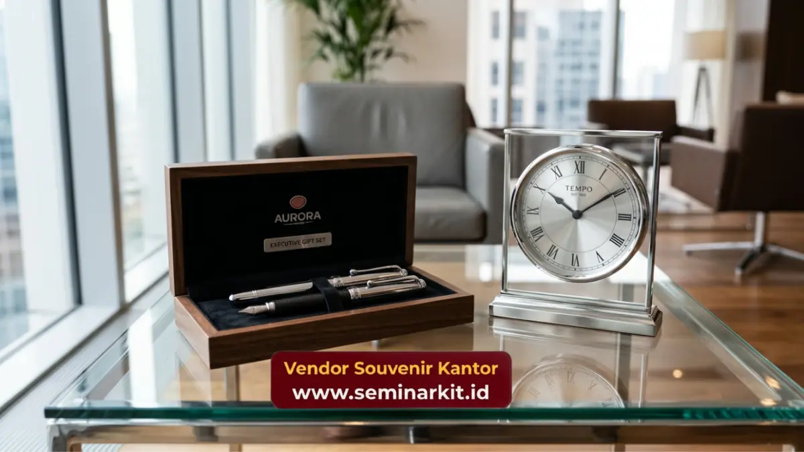

Souvenir corporate gifts premium adalah kategori merchandise korporat dengan kualitas bahan dan finishing lebih tinggi, dirancang khusus untuk acara-acara formal seperti gala dinner, seminar besar, atau penghargaan karyawan tahunan.
Produk ini dipilih karena mampu menghadirkan kesan eksklusif yang sesuai dengan skala dan pentingnya acara korporat.
vendorsouvenirkantor.web.id menyediakan pilihan souvenir corporate gifts premium yang dirancang untuk mendukung kesuksesan acara perusahaan Anda.
- Souvenir corporate gifts premium cocok digunakan pada acara formal berskala besar seperti gala dinner dan seminar korporat.
- Kualitas bahan dan finishing menjadi pembeda utama souvenir premium dibandingkan souvenir standar.
- Souvenir premium membantu menciptakan kesan mendalam yang meningkatkan citra profesional acara.
- Pemilihan souvenir premium sebaiknya disesuaikan dengan tema dan tingkat formalitas acara.
- vendorsouvenirkantor.web.id siap mendukung kebutuhan souvenir premium untuk berbagai acara korporat Anda.
Apa Itu Souvenir Corporate Gifts Premium?
Souvenir corporate gifts premium adalah merchandise korporat dengan standar kualitas lebih tinggi dibandingkan souvenir standar, baik dari segi bahan, desain, maupun proses finishing.
Produk dalam kategori ini biasanya menggunakan material seperti kulit sintetis berkualitas, logam presisi, atau kayu solid dengan detail pengerjaan yang lebih halus.
Souvenir premium umumnya digunakan pada acara-acara yang memiliki nilai simbolis tinggi, di mana kesan pertama dan detail visual sangat memengaruhi persepsi penerima terhadap perusahaan penyelenggara.
Acara Korporat Apa Saja yang Cocok Menggunakan Souvenir Corporate Gifts Premium?
Souvenir corporate gifts premium paling cocok digunakan pada acara korporat berskala formal yang melibatkan klien penting, jajaran manajemen, atau momen pencapaian besar perusahaan. Berikut beberapa jenis acara yang umum menggunakan souvenir premium.
Gala Dinner dan Perayaan Perusahaan
Gala dinner biasanya dihadiri oleh klien, mitra bisnis, dan jajaran eksekutif, sehingga souvenir yang diberikan perlu mencerminkan kesan mewah dan profesional yang sejalan dengan suasana acara.
Seminar dan Konferensi Berskala Besar
Souvenir premium pada seminar korporat membantu meninggalkan kesan mendalam kepada peserta, terutama jika acara tersebut melibatkan pembicara ternama atau topik strategis bagi industri terkait.
Penghargaan Karyawan dan Milestone Perusahaan
Momen seperti penghargaan karyawan berprestasi atau perayaan ulang tahun perusahaan menjadi kesempatan tepat untuk memberikan souvenir premium sebagai bentuk apresiasi atas kontribusi jangka panjang.
Peluncuran Produk atau Kerja Sama Strategis
Souvenir premium pada acara peluncuran produk atau penandatanganan kerja sama strategis membantu memperkuat kesan profesional sekaligus menjadi kenang-kenangan yang bernilai bagi tamu undangan.

Apa Perbedaan Souvenir Corporate Gifts Premium dengan Souvenir Standar?
Perbedaan utama souvenir corporate gifts premium dengan souvenir standar terletak pada kualitas bahan, tingkat kerumitan desain, dan proses finishing yang digunakan.
Souvenir premium umumnya melalui proses produksi yang lebih detail dan menggunakan material dengan daya tahan lebih tinggi.
Kualitas Bahan yang Lebih Tinggi
Souvenir premium menggunakan bahan seperti logam presisi, kulit sintetis berkualitas, atau kayu solid, berbeda dengan souvenir standar yang umumnya menggunakan bahan plastik atau material dasar dengan harga lebih terjangkau.
Proses Finishing yang Lebih Detail
Teknik finishing seperti laser engraving, emboss timbul, atau pelapisan warna khusus lebih sering digunakan pada souvenir premium untuk menghasilkan tampilan yang lebih elegan dan tahan lama.
Kemasan yang Lebih Eksklusif
Souvenir premium umumnya dilengkapi dengan kemasan khusus seperti kotak kayu atau kotak dengan lapisan beludru, yang turut memperkuat kesan mewah saat diberikan kepada penerima.
Nilai Tambah Souvenir Corporate Gifts Premium bagi Citra Perusahaan
Penggunaan souvenir corporate gifts premium pada acara korporat penting tidak hanya memberikan kesan baik kepada penerima, tetapi juga mencerminkan standar kualitas dan keseriusan perusahaan dalam menyelenggarakan acara tersebut.
Detail sekecil apa pun, termasuk pemilihan souvenir, turut membentuk persepsi tamu undangan terhadap profesionalisme perusahaan secara keseluruhan.
Selain itu, souvenir premium yang berkesan cenderung disimpan lebih lama oleh penerima dibandingkan souvenir standar, sehingga eksposur brand perusahaan berlangsung dalam jangka waktu yang lebih panjang.
Siapkan Souvenir Corporate Gifts Premium Acara Anda Bersama vendorsouvenirkantor.web.id
vendorsouvenirkantor.web.id memahami bahwa setiap acara korporat memiliki kebutuhan dan tingkat formalitas yang berbeda. Kami membantu perusahaan Anda memilih dan memproduksi souvenir corporate gifts premium yang sesuai dengan skala acara, mulai dari gala dinner hingga seminar korporat berskala besar.
Segera kunjungi vendorsouvenirkantor.web.id untuk konsultasi kebutuhan souvenir premium acara korporat Anda dan pastikan setiap momen penting perusahaan Anda meninggalkan kesan yang mendalam bagi seluruh tamu undangan.
Souvenir corporate gifts premium berperan penting dalam menciptakan kesan eksklusif pada acara korporat berskala formal.
Kualitas bahan, proses finishing, dan kemasan yang lebih detail menjadi pembeda utama dibandingkan souvenir standar.
Percayakan kebutuhan souvenir premium acara perusahaan Anda kepada vendorsouvenirkantor.web.id untuk hasil yang profesional dan berkesan.

Banner promosi: klik gambar untuk langsung terhubung ke WhatsApp tim sales.